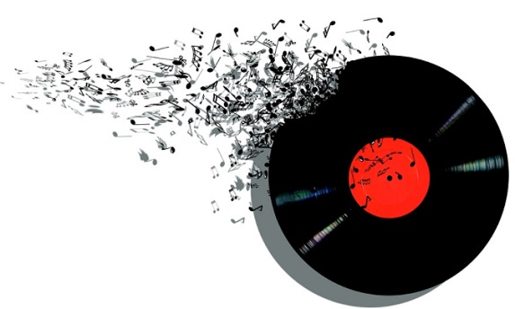

Maná es una banda de rock latino y pop latino mexicana. Se formó en Guadalajara, en 1987. Está conformada por Fher Olvera (guitarra rítmica, armónica y voz), Juan Calleros, (bajo y contrabajo) Alex González (batería y voz) y Sergio Vallín (guitarra líder y voz). Ha vendido más de 40 millones de discos en todo el mundo, convirtiéndolos en la banda latina más exitosa de todos los tiempos. El grupo ha ganado cuatro premios Grammy, ocho Premios Grammy Latinos, cinco MTV Video Music Awards Latinoamérica, cinco Premios Juventud, diecinueve Premios Billboard de la Música Latina y quince de los Premios Lo Nuestro. Además ha obtenido múltiples premios por su labor a favor de la ecología. En el 2012 formaron parte del paseo de rock en Hollywood, Estados Unidos. Su sonido se basa en el rock latino, rock progresivo, ritmos latinos, pop latino y el rock en español. En un principio recibieron el éxito comercial internacional en México, Australia y España, y desde entonces han ganado popularidad y la exposición en toda Latinoamérica, Estados Unidos, Europa Occidental, Asia y Oriente Medio.
Orígenes musicales Punk rock post-punk new wave Orígenes culturales Inicios a mediados de los 1980, Reino Unido y Estados Unidos Instrumentos comunes Voz, guitarra eléctrica, bajo eléctrico, batería, teclado, sintetizador Popularidad Baja y underground en un principio pero muy alta desde los 90 hasta la actualidad, sobre todo en sus lugares de origen (Reino Unido y Estados Unidos) Derivados Nu metal Subgéneros Britpop college rock dream pop emo geek rock gothic rock grunge indie pop indie rock jangle pop madchester math rock neo-psicodelia noise rock post-grunge post-hardcore post-punk revival shoegazing stoner rock Fusiones alternative metal [editar datos en Wikidata] El rock alternativo es un género musical que nació en los años 80 y que muchas veces utiliza música compuesta por sonidos y elementos musicales no tradicionales, apegándose a la llamada cultura underground (es decir, un género antipopular, anticomercial y contrario a los estilos comunes y populares). Alcanzó sus mayores cuotas de madurez y popularidad en los años 90, así como a todos los subgéneros que han surgido a partir de él desde entonces. El término "alternativo" se acuñó para describir una nueva y distinta forma de hacer "rock", estilo que comúnmente está asociado a ser muy masivo y de alta popularidad al igual que el pop; mientras que este nuevo género no ponía el énfasis en el éxito o las ventas, sino que casi al contrario, con un sonido menos melódico que se movía entre pequeños bares, pubs o clubes del circuito underground (es decir, que no se ajustaban a la música mainstream de la época.); también, no se valían de la radio para popularizarse, sino que más bien del "boca a boca"; otra característica común de estos artistas o grupos era que grababan sus álbumes en discográficas independientes. Entre los diversos géneros que han surgido en la escena independiente, cabe destacar el shoegazing, el noise rock, el grunge, el britpop o el indie rock, entre muchos otros. Estos estilos tienen en común la herencia del espíritu del punk y de los géneros que surgieron a partir de él.